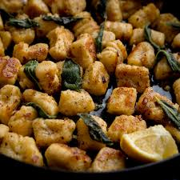

Gnocchi with sage and butter sauce

Description
A delicious sage-butter sauce with gnocchi pasta and Parmesan
cheese makes a delicious side dish or complete meal.
Ingredients
- 2 (12 ounce) packages potato gnocchi
- ¼ cup butter
- 1 clove garlic, minced
- 1 teaspoon dried sage
- ¼ teaspoon salt
- ¼ cup grated Parmesan cheese
- ¼ teaspoon ground black pepper
- 2 tablespoons grated Parmesan cheese
Steps
- Gather all ingredients.
- Bring a large pot of lightly salted water to a boil over high heat. Add gnocchi pasta and cook until they float to the surface,
2 to 3 minutes; drain.
- Melt butter in a skillet over medium heat. Stir in garlic and cook until softened and golden brown, about 4 minutes.
- Stir in sage and salt. Add cooked gnocchi, 1/4 cup Parmesan cheese, and pepper; toss gently to combine.
- Sprinkle with 2 tablespoons Parmesan cheese to serve.